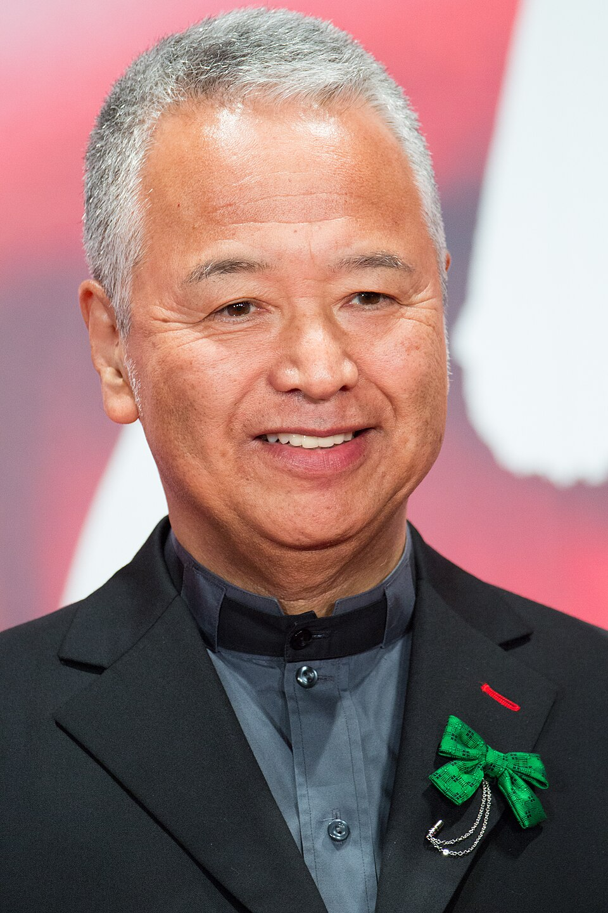
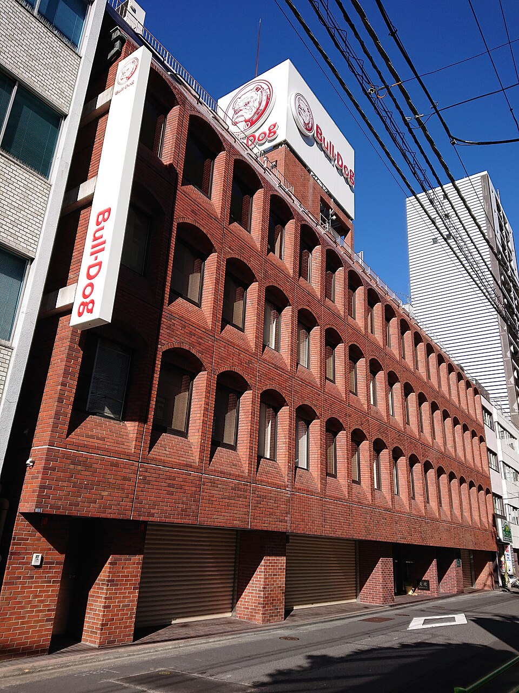
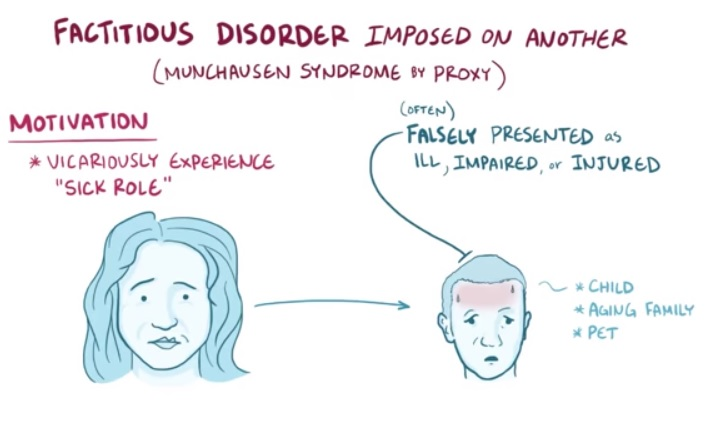
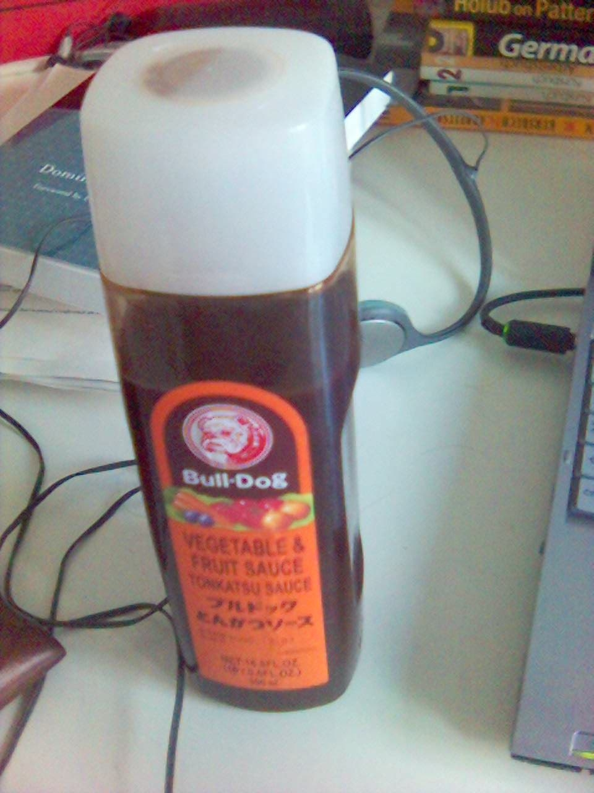

_03.jpg){kind=link}


.jpg){kind=link}

池
池田章子
いけだ・あきこ
ブルドックソース代表取締役社長
役割：TOB反対と防衛策を主導した会社側代表
その後：後任・退任時期の詳細は本調査で未確認4
2002年〜2026年11月15日
スティール・パートナーズはブルドックソース株を約10.25％保有し、2007年5月、全株取得を目的とするTOBを開始した。1
ブルドックソースは取締役会の反対決議と株主総会の特別決議を経て、スティール関係者を非適格者とする新株予約権無償割当てを実施した。2
最高裁は2007年8月7日、株主平等原則の趣旨が新株予約権無償割当てにも及ぶとしつつ、企業価値・株主共同の利益を守る必要性と金銭補償の相当性を認め。差止めを退けた。2

スティール・パートナーズは2002年ごろからブルドックソース株を保有していた。報道によれば、保有が明らかになった後も会社とスティール側の接触は限定的で、2005年10月にはスティール側役員らがブルドックソース代表者らと面談し。MBOを打診したとされる。2007年5月11日付の書簡では、スティール側は長期投資家として経営陣と協力する旨を記載した。5月16日、ウォレン・リヒテンシュタインが代表するスティール側はTOB意向を伝え、会社側は買収後の経営方針と資本関係を確認する局面に入った。134
2007年5月18日、スティール側買付目的会社はブルドックソースの発行済株式全部を取得するTOBを開始した。当初価格は1株1,584円で、スティール側保有比率は約10.25％だった。5月25日、ブルドックソースは意見表明報告書を提出し、取締役会は意見を留保した。同日付の質問書では、買収後の経営方針、事業計画、資産処分、上場維持、議決権行使、資金調達。買付価格の算定根拠を確認しようとした。24
6月1日、スティール側は対質問回答報告書を提出した。最高裁決定が整理した回答では、スティール側は日本で会社を経営した経験がなく、当面自ら経営する予定もなく。買収後の具体的な事業計画・経営計画を有していなかった。また、投下資本の回収方針にも具体的な記載がなかった。会社側はこの説明を、企業価値や株主共同の利益への影響を判断する材料とした。2
6月7日、ブルドックソース取締役会はTOB反対を決議し、買収防衛策を株主総会に付議する方針を決めた。スティール側はTOB価格を6月15日に1,700円へ引き上げ、期間を8月10日まで延長した。6月12日にはリヒテンシュタインが記者会見を行い、6月13日にはスティール側が新株予約権無償割当ての差止めを申し立てた。会社側は、買収後の方針と資本回収方針が明らかでないことから、買収が企業価値を損ない。会社の利益ひいては株主共同の利益を害すると主張した。25
6月24日の定時株主総会では、定款変更と新株予約権議案が可決された。議決権総数の約83.4％、出席株主議決権の約88.7％が賛成した。取締役会は、保有株1株につき新株予約権3個を無償で割り当てる要項を決議し、一般株主は新株予約権1個につき1円を払い。1株を取得できる仕組みとされた。スティール関係者は非適格者とされ、権利を行使できない一方、会社が1個396円で取得する設計だった。26
6月28日、東京地方裁判所は新株予約権無償割当ての差止め仮処分申立てを却下した。7月9日、東京高等裁判所はスティール側の抗告を棄却した。7月10日、スティール側は最高裁へ許可抗告を申し立て、7月11日には新株予約権無償割当ての効力発生日を迎えた。8月7日、最高裁第二小法廷は許可抗告を棄却した。最高裁は、会社法109条1項の株主平等原則の趣旨が新株予約権無償割当てにも及ぶとしたうえで、買収者だけを非適格者として扱うことについて、株主総会の判断、企業価値・株主共同の利益を守る必要性。金銭補償の相当性を検討した。27
最高裁は、スティール側の買収後の経営方針や投下資本の回収方針が具体化されていないことを認定した。また、会社側が非適格者に新株予約権を行使させず、1個396円の金銭を交付する仕組みを採用したことを踏まえ。著しく不公正な方法による発行とはいえないと判断した。最高裁の決定により、2007年に有事導入された防衛策を差し止めることは認められなかった。2
投下資本の回収方針については具体的な記載がなかった。
意味：最高裁が、買収後の経営方針と投資回収方針の不明確さを認定した部分である。URL: https://jp.tailexi.org/hanrei/35027
7月24日、ブルドックソース取締役会は非適格者の新株予約権取得について決議した。8月7日、会社は新株予約権消却損21億1,400万円を公表し、8月9日にスティール側新株予約権を取得・消却した。TOBは8月23日に期間を終了し、不成立となった。会社はTOB・訴訟対応について財務アドバイザーや弁護士等への費用を支出し、総費用約28億円を見込んだ。2008年3月期は最終損失約19億円となり、2007年3月期の最終利益約5.4億円から悪化した。86910
2007年6月には経済産業省次官の発言があり、2008年3月26日の衆議院経済産業委員会で取り上げられた。田村謙治委員は、経産省の事務次官が一方の当事者に肩入れをした、応援演説のようなことを公的な記者会見で行ったと追及した。甘利明経済産業大臣は、北畑隆生事務次官の発言について、極めて不適切な発言だったと思っていると答弁した。スティール側と政府側の説明は一致せず、買収防衛策をめぐる行政幹部の発言の位置付けが議論となった。1112
2008年4月にはスティールが保有株を全売却したとの報道があり、6月25日には会社の買収防衛策が株主総会で承認された。ブルドックソースは2022年5月13日にも買収防衛策の継続を公表した。本調査の基準日は2026年11月15日であり、事件に関する新たな司法判断は未確認である。13142
最高裁の判断は、買収防衛策をめぐる当事者の位置を一つの結論で単純化しなかった。スティール側については、買収後の具体的な事業計画や投下資本の回収方針が示されていないことが判断材料となった。ブルドックソースについては、取締役会が反対を決め、株主総会が議案を承認し。一般株主とスティール関係者で異なる取扱いを設計したことが検討された。裁判所は、株主平等原則の趣旨が及ぶことを示したうえで、必要性と相当性を審査した。2
この過程で、会社側が誰にいくら支払うか、一般株主がどの条件で新株予約権を行使できるか、買収者側がどの情報を提示したかが。裁判上の判断対象となった。防衛策発動後には、新株予約権消却損と財務アドバイザー・弁護士等への費用が会社財務に計上された。TOBは不成立となり、スティール側の保有株売却が報道された。政府高官の発言については後の国会質疑で適切性が問われたが、発言の問題と防衛策の司法判断は別の記録として確認する。さらに、会社側、買収者側、一般株主、裁判所、政府関係者がそれぞれ異なる資料を残しており。同じ出来事でも確認できる範囲が資料ごとに異なっている。8911






| ブルドックソース本社 | 東京都中央区日本橋兜町11番5号 | TOB対応と取締役会決議の主体 | 17 |
| 東京地方裁判所 | 東京都千代田区霞が関1-1-4 | 2007年6月28日の仮処分決定 | 18 |
| 東京高等裁判所 | 東京都千代田区霞が関1-1-4 | 2007年7月9日の抗告棄却 | 19 |
| 最高裁判所 | 東京都千代田区隼町4-2 | 2007年8月7日の許可抗告棄却 | 20 |
| 東京証券取引所 | 東京都中央区日本橋兜町2-1 | ブルドックソース株式の上場市場 | 21 |
| 関東財務局 | 埼玉県さいたま市中央区新都心1-1 | TOB届出書・意見表明報告書の提出先 | 2 |
| 経済産業省 | 東京都千代田区霞が関1-3-1 | 政府の買収防衛策議論 | 11 |
| 中央合同庁舎第6号館 | 東京都千代田区霞が関1-1-1 | 裁判・行政関係機関が所在 | 22 |
スティール側が株式を買い集め、全株取得を目的とするTOBを開始したのに対し、ブルドックソースは一般株主に新株予約権を割り当て。スティール関係者には金銭を交付して権利を取得・消却する防衛策を実施した。26
いけだ・あきこ
ブルドックソース代表取締役社長
役割：TOB反対と防衛策を主導した会社側代表
その後：後任・退任時期の詳細は本調査で未確認4
うぉれん・りひてんしゅたいん
スティール・パートナーズ代表・マネージングパートナー
役割：TOB意向を伝え、買収目的を説明した
その後：TOB不成立後の詳細は本調査で未確認4
さとう・こういち
ブルドックソース執行役員経営企画室長
役割：TOB関連資料の問い合わせ先として公表された
その後：詳細は本調査で未確認4
きたばた・たかお
経済産業省事務次官
役割：スティール側の防衛策批判について発言したとされ、国会で議論された
その後：詳細は本調査で未確認11
あまり・あきら
経済産業大臣
役割：北畑発言について国会答弁を行った
その後：2008年3月26日答弁11
いまい・いさお
最高裁第二小法廷裁判長
役割：2007年8月7日決定に関与した
その後：最高裁決定2
つの・おさむ
最高裁第二小法廷裁判官
役割：2007年8月7日決定に関与した
その後：最高裁決定2
なかがわ・りょうじ
最高裁第二小法廷裁判官
役割：2007年8月7日決定に関与した
その後：最高裁決定2
ふるた・ゆうき
最高裁第二小法廷裁判官
役割：2007年8月7日決定に関与した
その後：最高裁決定2
あかがみ・ひろひと
スティール側抗告代理人
役割：最高裁への許可抗告を代理した
その後：詳細は本調査で未確認2
すてぃーる・ぱーとなーず
公開買付者側
役割：ブルドックソース株を買い集め、全株取得を目的にTOBを開始した
その後：2008年4月に保有株を全売却したとの報道2
ぶるどっくそーす
TOB対象会社
役割：取締役会と株主総会で防衛策を決定した
その後：2022年5月に防衛策継続を公表14
さいこうさいだいにしょうほうてい
最高裁判所
役割：2007年8月7日に許可抗告を棄却した
その後：防衛策の必要性・相当性を判断2
TOBを進めたスティール側、反対と防衛策を決めたブルドックソース、議案に賛成した株主、差止めを審理した裁判所。発言をめぐり国会で問われた政府関係者を示す。闇社会との接点は、確認できたファンド・オフショア法人、政府高官の発言と。確認できない項目を区別する。
対立・確執。池田が代表するブルドックソースはTOBに反対し、リヒテンシュタイン率いるスティール側は全株取得を目指した。両者のトップ会談が決裂したと報道されているが、会談の詳細な発言記録は未確認。東洋経済1
上司と部下。池田が代表取締役社長、佐藤が経営企画室長として、TOB対応の会社資料を共同で公表した。ブルドックソースIR4
盟友。リヒテンシュタインは公開買付者の代表者・ファンド側の対外説明者として行動した。ブルドックソース資料4
上司と部下。甘利経済産業大臣は、北畑事務次官の記者会見発言について国会で説明した。国会会議録11
対立・確執。スティール側は買収方針を具体化しないままTOBを開始し、取締役会は企業価値毀損を理由に反対したと最高裁が認定した。最高裁決定2
資金の出し手と受け手。スティール側は株主にTOB価格を提示し、ブルドック側は対抗策によって株主に新株予約権を付与した。最高裁決定2
対立・確執。スティール側は新株予約権無償割当ての差止めを申し立て、東京地裁は却下した。最高裁決定2
対立・確執。スティール側の抗告を東京高裁が棄却した。最高裁決定2
対立・確執。スティール側は許可抗告を行い、最高裁は抗告を棄却した。最高裁決定2
庇護・口利き。取締役会は防衛策を提案し、株主総会の特別決議で承認を得た。最高裁決定2
資金の出し手と受け手。会社はTOB対応の財務アドバイザー報酬を支出し、関連費用を計上した。ブルドックソースIR8
資金の出し手と受け手。会社は訴訟対応の弁護士費用を支出した。ブルドックソースIR8
対立・確執。スティール側以外のほとんどの株主が防衛策に賛成し、議決権総数の約83.4％で可決した。最高裁決定2
対立・確執。北畑発言について、スティール側の批判と政府側の説明が対立した。国会会議録11
対立・確執。本件判断が外国人投資家の日本市場離れを促したとの評価が報道されたが、因果関係は公的に確定していない。東洋経済1
公開買付者グループの関係(資本関係、取引関係、役職員の兼任その他の人的関係、契約関係、及びこれらの関係の沿革を含みますが、これらに限られません。)
意味：ブルドック側が、買収者グループの実質的な人的・資本的つながりを問いただした箇所である。URL: https://www.bulldog.co.jp/company/pdf/070525_IR2.pdf
本調査で暴力団・総会屋、仕手筋、フィクサー・ブローカー、政治献金、海外口座への最終送金。不審死の関与は確認できない。確認できるのは、スティール側投資ファンドと関連法人、ケイマン諸島等のオフショア法人。政府高官発言をめぐる国会論議である。
該当組織・人物を確認できない 確認できない
該当人物を確認できない 確認できない
スティール・パートナーズ・ジャパン・ストラテジック・ファンド、関連法人 認定
スティール側投資ファンド 認定
北畑隆生、甘利明 指摘
具体的な献金先・金額を確認できない 確認できない
具体的人物を確認できない 確認できない
送金先・口座情報を確認できない 確認できない
事件関連の自殺・殺人・不審死を確認できない 確認できない
そこは、極めて不適切な発言だったと思っております。
意味：北畑事務次官のデートレーダー・株主に関する発言を、担当大臣が不適切と認めた。URL: https://kokkai.ndl.go.jp/simple/detail?minId=116904080X00220080326
| ブルドックソース経営陣 | 1件 | 0件 | TOBによる経営権移転を阻止し、経営支配権を維持 | 2 |
| スティール・パートナーズ | 21.14億円 | 0億円 | 非適格者の新株予約権について会社から支払いを受ける設計 | 2 |
| ブルドックソース株主 | 1機会 | 0機会 | 新株予約権を通じて株式取得機会を得た | 2 |
| ブルドックソース会社財務 | 0億円 | 28億円 | 消却損とTOB・訴訟関連費用の総負担見込み | 8 |
| 財務アドバイザー・弁護士等 | 6億円 | 0億円 | TOB・訴訟関連費用の受領側 | 8 |
| 外国人投資家 | 0件 | 1件 | 日本市場離れを促したとの評価は報道されているが因果関係は未確認 | 1 |
| 東京地方裁判所 | 2007-06-28 | 申立て却下 |
| 東京高等裁判所 | 2007-07-09 | 抗告棄却 |
| 最高裁第二小法廷 | 2007-08-07 | 許可抗告棄却 |
新株予約権無償割当て差止め仮処分申立て。確定2
| 本調査 | 2007年〜2026年11月15日 | 本件に関する刑事起訴・有罪判決は確認できない |
刑事起訴・有罪判決。確認できず2
| 本調査 | 2007年〜2026年11月15日 | 金融庁・取引所の行政処分は確認できない |
金融庁・取引所による行政処分。確認できず2
本件抗告を棄却する。
意味：スティール側の許可抗告を退け、買収防衛策をめぐる司法判断を確定させた。URL: https://jp.tailexi.org/hanrei/35027
法１０９条１項に定める株主平等の原則の趣旨は，新株予約権無償割当ての場合についても及ぶというべきである。
意味：新株予約権無償割当ても、株主平等原則の審査対象になると判示した。URL: https://jp.tailexi.org/hanrei/35027
投下資本の回収方針については具体的な記載がなかった。
意味：最高裁が、買収後の経営方針と投資回収方針の不明確さを認定した部分である。URL: https://jp.tailexi.org/hanrei/35027
その有する債務者株式１株に付き３個の割合で本件新株予約権を割り当てる。
意味：防衛策の希薄化設計を具体的に示す箇所である。URL: https://www.courts.go.jp/app/files/hanrei_jp/882/034882_hanrei.pdf
債権者関係者は，「非適格者」として本件新株予約権を行使することができない。
意味：スティール側だけを権利行使から除外した条件である。URL: https://www.courts.go.jp/app/files/hanrei_jp/882/034882_hanrei.pdf
出席した当該株主の約８８．７パーセント（総議決権の約８３．４パーセント）の賛成により，
意味：防衛策が株主総会で圧倒的多数により承認されたことを示す。URL: https://www.courts.go.jp/app/files/hanrei_jp/882/034882_hanrei.pdf
公開買付者グループの関係(資本関係、取引関係、役職員の兼任その他の人的関係、契約関係、及びこれらの関係の沿革を含みますが、これらに限られません。)
意味：ブルドック側が、買収者グループの実質的な人的・資本的つながりを問いただした箇所である。URL: https://www.bulldog.co.jp/company/pdf/070525_IR2.pdf
本公開買付けの目的は、公開買付者及びその特別関係者とあわせて、対象者の発行済の株式の全株式を取得することにあります。
意味：全株取得の目的を明確化するよう、会社側が公開買付者に迫った。URL: https://www.bulldog.co.jp/company/pdf/070525_IR2.pdf
経産省の事務次官が一方の当事者に肩入れをした、応援演説のようなことを公的な記者会見で行った。
意味：係争中の事件について、行政幹部が会社側に肩入れしたのではないかという国会追及である。URL: https://kokkai.ndl.go.jp/simple/detail?minId=116904080X00220080326&spkNum=86
そこは、極めて不適切な発言だったと思っております。
意味：北畑事務次官のデートレーダー・株主に関する発言を、担当大臣が不適切と認めた。URL: https://kokkai.ndl.go.jp/simple/detail?minId=116904080X00220080326
当該取扱いが衡平の理念に反し、相当性を欠くものでない限り（相当性）、これを直ちに同原則の趣旨に反するものということはできない。
意味：最高裁決定の必要性・相当性という判断枠組みを経産省資料が整理している。URL: https://www.meti.go.jp/shingikai/economy/kosei_baishu/pdf/001_04_00.pdf
債権者関係者が上記の定義に係るグリーンメーラーであると認めるには足りない。
意味：東京地裁は、スティール側をグリーンメーラーと断定する証明は不足するとした。URL: https://jfsc.jp/research/ma-hanrei/bulldog-sauce-baishuu-boueisaku/
会社法109条1項の株主平等原則の趣旨が新株予約権無償割当てにも及ぶと判示した。2
企業価値・株主共同の利益を守る必要性と、差別的取扱いの相当性を検討する枠組みを示した。23
買収者以外の株主の大多数が重大な手続的瑕疵なく承認した場合、その判断を尊重する考え方を示した。2
本件が有事導入型であったため、事前に防衛策を定めておくことの予見可能性が重視されるようになった。23
2008年6月25日に防衛策が株主総会で承認され、2022年5月13日にも継続が公表された。14
本件を直接の原因として会社法の条文が改正された事実は確認できない。23
スティール側：全株取得を目的とするTOBであり、株主に市場価格を上回る売却機会と流動性を与えると説明した。4
ブルドックソース：買収後の経営方針、事業計画、資産処分、投下資本の回収方針が明らかでなく。企業価値を損なう危険があると主張した。2
スティール側：新株予約権無償割当てが株主平等原則に違反し、著しく不公正な方法による発行だと主張した。2
ブルドックソース：株主総会の特別決議を経て、非適格者には1個396円の金銭を交付するため、必要性と相当性があると主張した。2
田村謙治委員：経産省の事務次官が一方の当事者に肩入れをした、応援演説のようなことを公的な記者会見で行ったと追及した。12
甘利明経済産業大臣：北畑事務次官の発言について、極めて不適切な発言だったと思っていると答弁した。11